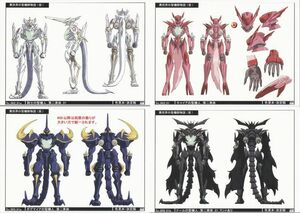

聖機師物語の舞台となるのは「ジェミナー」と呼ばれる世界。ここには二つの海が存在している。 一つはこの地球にもあるような塩水から成る海、そしてもう一つは「エナ」と呼ばれる海である。 「エナの海」は目に見えるモノではなく、重いガスのように海抜500 メートル前後までに層を成して存在している。 また、この「ジェミナー」の文明は、全てが「亜法」と呼ばれる技術を使った動力によって支えられている。 そして亜法のエネルギー源は「エナ」である。「エナの海」を少しでも外れるとこの亜法は使えなくなる。 そのため、ほとんどの人々の生活圏は「エナの海」のある海抜500 メートル以下に集中している。
【聖機人（せいきじん）】
「ジェミナー」には地球同様、多くの国々があり、互いに覇権を巡り争いが絶えなかった。
当然、兵器にも亜法の技術が使われている。その主力が「聖機人」である。
（ちなみに聖機人は、古代遺跡から発掘されて力の象徴とされている聖機神[せいきしん]を原型にしている。）聖機人はエナの海の中では凄まじい力を発揮する絶対的な兵器となっている。
しかし「聖機人」には大きな欠点がある。それは搭載されている高出力亜法動力炉が回転時に脳生理機能を阻害する特殊な振動波を出すということだ。人間はこの特殊な振動波を受けると亜法酔いを起こしてしまう。
―――「聖機師」とはこの振動波に高い耐性を示す者の事であり、より高い耐性を示していたのは、召還された異世界人であった。
また聖機人はそれを操縦する聖機師の特性により形状が異なる。すなわち聖機人の形状を見れば聖機師を特定することができるのである。
聖機人は、各国の勢力均衡を保つため教会が管理している。各国は教会から聖機人を供与され、決められた数だけ所有することができることになっている。このように数々の聖機人が登場する。
